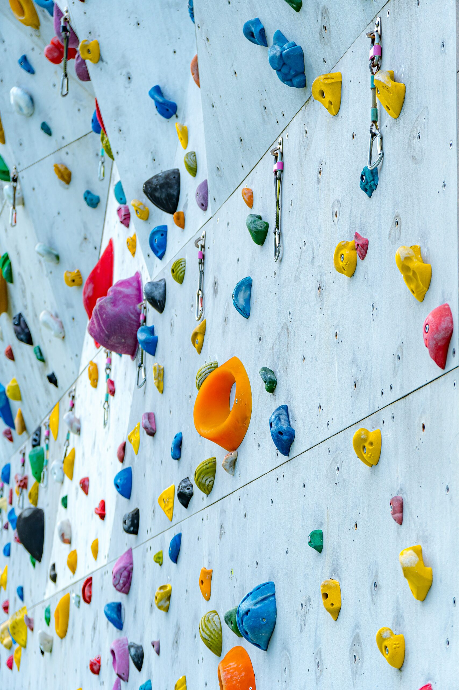
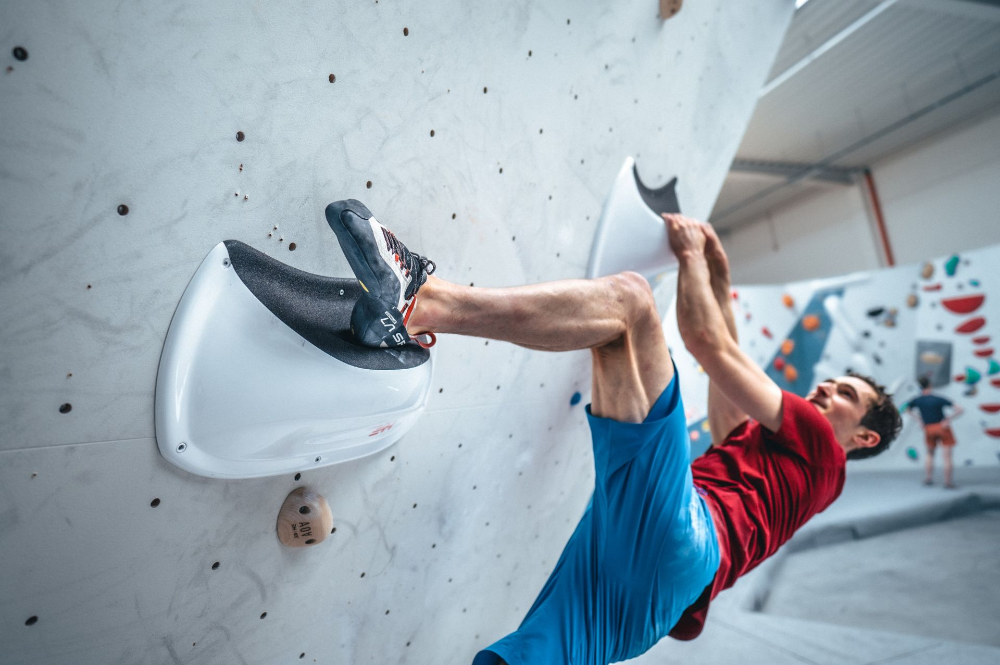

Types of Climbing Holds
Climbing walls have holds in many different shapes, sizes and directions.Each type requires a different grip or body position to be used efficiently.
- Jugs
- Crimps
- Slopers
- Pinches
- Pockets
My persoal favorite is the jug, it is the easiest and it gives me confidence and purpose to know that there is a jug somwhere in the climb that i can relly on and take a moment there.

My Favorite Climbing Techniques
These is a tier list of my favorite climbing techinches that learned and use on my day to day climbing.
- Straight arms
- Heel hooking
- Flagging
- Smearing
- Drop knees
Staright arms is definitely my favorite technique, my climing performance has gotten so much better since I started to have my arms straight. It helped me losen my body and relax which improved the amount of time I could be on the wall while climbing.
Heel hooks are also really usefull. Some climbs will require you to use them, some other times it just makes your life easier. But really, the reazon I like them is because they make the climb more scary and fun. Sometimes it will be to scary to do a heel hook when you are high up or when you are on a corner, but that is what makes climbing growthful, to overcome your fears.
